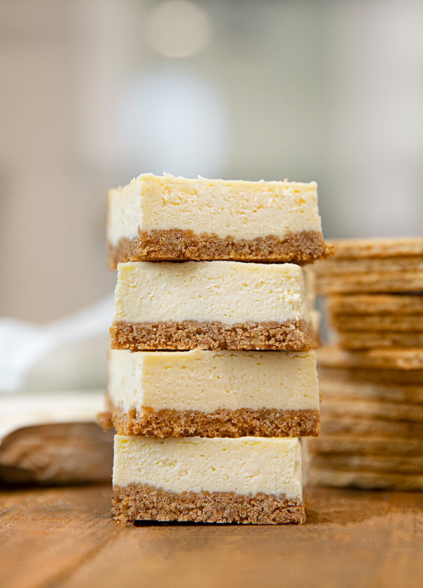

Other Blog Posts...
Cheesecake Bars
These bars will give you all the happy feels!
Click here to read more...
Today's modified recipe is chocolate chip cookies! You can find the original recipe here.
A chocolate chip cookie is a drop cookie that originated in the United States and features chocolate chips or chocolate morsels as its distinguishing ingredient. Circa 1938, Ruth Graves Wakefield added chopped up bits from a Nestlé semi-sweet chocolate bar into a cookie. The traditional recipe starts with a dough composed of butter and both brown and white sugar, semi-sweet chocolate chips and vanilla. Variations on the recipe may add other types of chocolate, as well as additional ingredients such as nuts or oatmeal. There are also vegan versions with the necessary ingredient substitutions, such as vegan chocolate chips, vegan margarine, egg substitute, and so forth. A chocolate chocolate chip cookie uses a dough flavored with chocolate or cocoa powder, before chocolate chips are mixed in. These variations of the recipe are often referred to as ‘double’ or ‘triple’ chocolate chip cookies, depending on the combination of dough and chocolate types.
During WWII, soldiers from Massachusetts who were stationed overseas shared the cookies they received in care packages from back home with soldiers from other parts of the United States. Soon, hundreds of soldiers were writing home asking their families to send them some Toll House cookies, and Wakefield was soon inundated with letters from around the world requesting her recipe. Thus began the nationwide craze for the chocolate chip cookie.[6][7] The demand for the cookies helped spread their popularity beyond the east coast.[8] The recipe for chocolate chip cookies was brought to the UK in 1956, with Maryland Cookies one of the UK's best selling chocolate chip cookies.[9]
| Time | Total |
|---|---|
| Prep Time | 10 minutes |
| Cook Time | 8 minutes |
You only need a few ingredients:
Here are the directions:
These bars will give you all the happy feels!
Click here to read more...